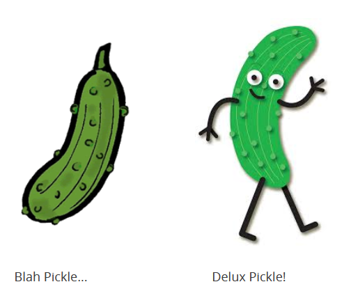
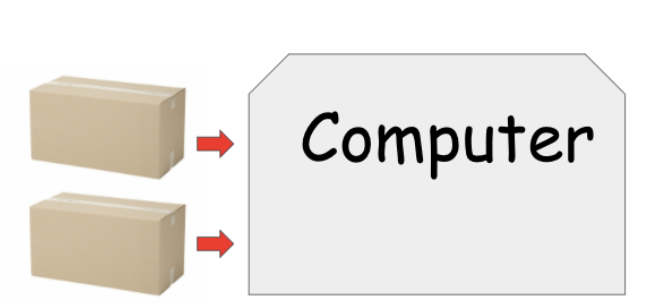
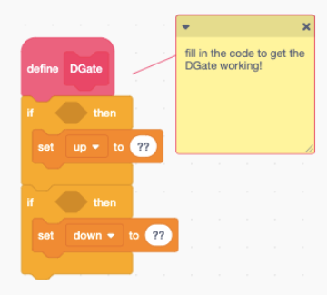
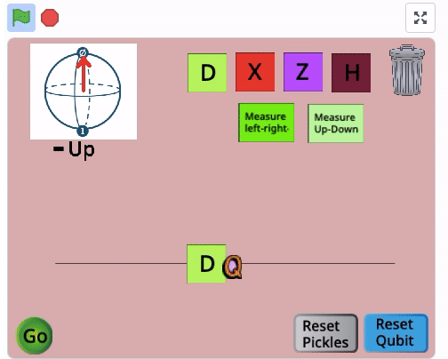
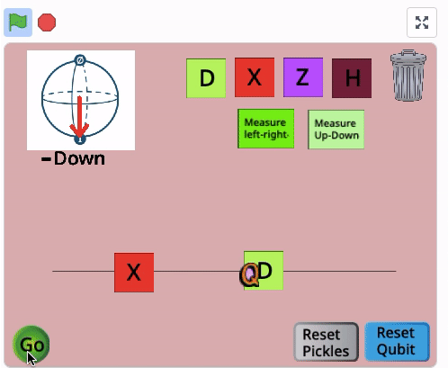
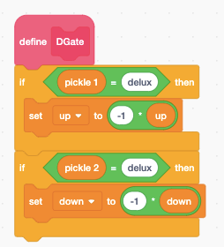
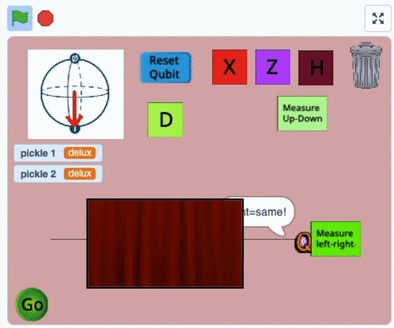

A Pickle Problem¶
We’re going to explore quantum algorithms in this section.
Joey is visiting their friend Bob on Mars, when another, mysterious character appears! It’s Joey-Fresh,
Joey-Fresh gives Joey two boxes,

Joey-Fresh tells Joey the boxes both have pickles in them, but doesn’t say which kind - are they amazing Delux brand pickles, or regular old Blah brand?

Joey decides to keep one pickle for themselves, and give one to Bob, but wants to make sure both pickles are the same type before they do this - otherwise they might give themselves the Delux, and Bob the Blah! (how rude!).
How can Joey check if the pickles are the same?
Joey will try to check if the pickles are the same brand using a computer. As we will see, this will let them check using just one step! Joey begins by placing pickle boxes inside their quantum computer:

Joey’s computer will now implement a special gate, which we will call the “D” gate. You will write the code yourself to get the DGate working. To do this, go into the Scratch project.
Look under the “Qubit” sprite and check out its code. Then look for the code where the DGate is defined, which looks like this:

Try to make the “D” gate do the following to the up and down states,
If pickle 1 is Delux, and we give the quantum computer the \(\uparrow\) state, then we get back - \(\uparrow\).
If pickle 2 is Delux, and we give the quantum computer the \(\downarrow\) state, then we get back - \(\downarrow\).
Otherwise the computer doesn’t change anything.
Let’s first of all think of how a classical computer might check if the pickles are the same or different. Remember that classical bits can only have two states, which could be up or down. If we make sure to only let our qubit be in the up or down states, we are really just using a classical computer.
So, with our DGate working, lets send in an up state, and watch what happens to the state as it goes through the DGate:

We know that, if Pickle 1 is Delux, we will get -up.
Then, we send in a down state, and watch what happens as it goes through the DGate:

We note that if Pickle 2 is Delux we will get -down.
Then, we know that
If we got plus both times both qubits are Blah brand, and so the same.
If we got minus both times both qubits are Delux, and so the same.
If we got minus only one time, only one qubit is Delux, so they are different.
Quantum Parallelism¶
Now let’s think about how this works using a quantum computer. We can actually check if the pickles are the same or different now, using a trick called “quantum parallelism”. Here’s the idea.
Sending in up let us check the brand of Pickle 1. Sending in down let us check the brand of Pickle 2. We can learn something about both Pickles at the same time by sending in \(\rightarrow\), the superposition of \(\uparrow\) and \(\downarrow\).
This idea, of sending in superpositions of several different things we’d like to know about, is called quantum parallelism. In the questions below you’ll explore what the DGate does to the right state. You’ll need to remember what you learned earlier today about how gates work together with superposition:
DGate( \(\rightarrow\) ) = DGate( \(\uparrow\) + \(\downarrow\) ) = DGate( \(\uparrow\) ) + DGate( \(\downarrow\) )
Concept Check¶
Use the following image to help you answer the questions.

Assume that both pickles are Blah brand. Then what does the DGate do to the right state?
Nothing!
Suppose that the first pickle is Blah brand, and the second pickle is Delux brand. Then what does the DGate do to the right state?
Leaves it as the right state
Turns it into the left state
Turns it into the up state
Turns it into the down state
Turns it into the left state.
Suppose that both pickles are Delux brand. Then what does the DGate do to the right state?
Turns it into the -right state
Turns it into the left state
Turns it into the up state
Turns it into the down state
Turns it into the -right state
Coding!¶
By editing your Scratch project, try to have one of your measurement blocks say “same” when the pickles are the same brand, and “different” when they are not.
That means that, aside from writing the DGate code, you also need to choose which quantum gates to lay down. In the end your circuit should do this:

When you’ve completed your circuit, add your project to the camp studio.
You can also add creative elements to your project! (change the appearance for example).
Wrap-Up¶
Congrats, you’ve just built your first algorithm!
Our quantum solution isn’t really all that much faster than opening both boxes, at least when there are just two boxes. However, a similar approach solves a harder problem:
Suppose we have 100 boxes, and that we know for sure that either all the boxes contain the same brand of pickles, or that exactly half of the boxes contain Blah brand and half contain Delux brand. Then a quantum computer can learn which situation we are in using just one step. A classical computer would have to open at least half the boxes before being able to answer with certainty - so the quantum computer is much faster!
Its important that if we asked a different question, the quantum computer actually isn’t any better at solving the problem than the regular idea of opening all the boxes. For example if we don’t give any guarantee about whats in the boxes, the classical computer is just as fast as the quantum one.
This is a general feature in quantum computing. Quantum computers are not better at all kinds of problems - they’re only better at certain problems! Of course, some of these problems are quite important ones, and that means quantum computers will have a big impact. In the next section we’ll learn about a few different problems where quantum approaches are useful.